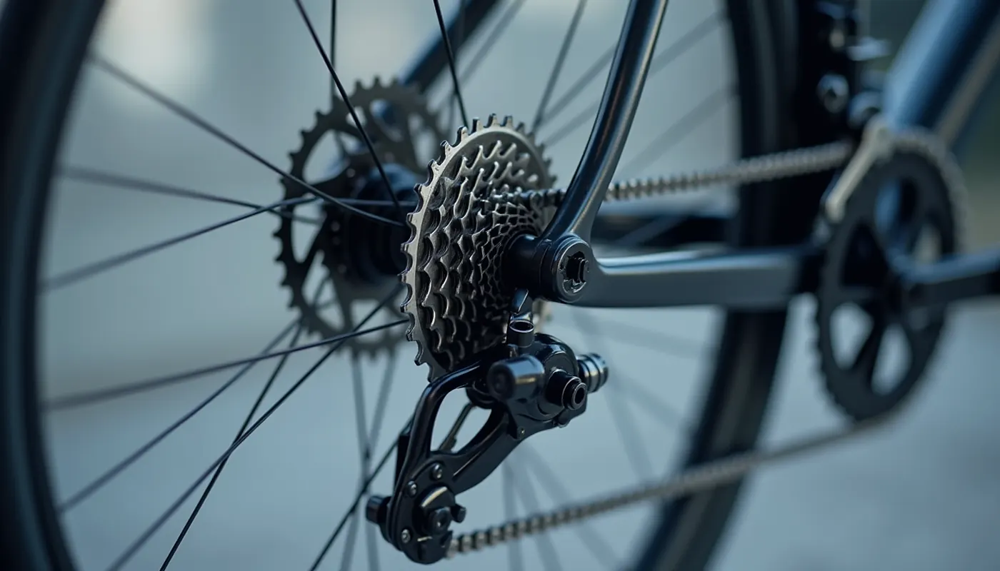
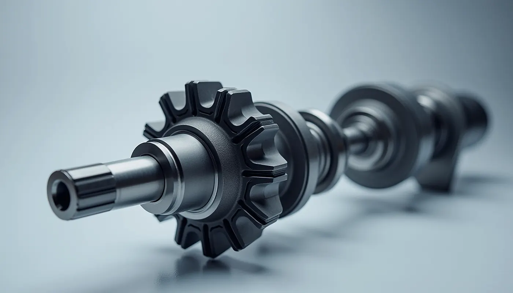
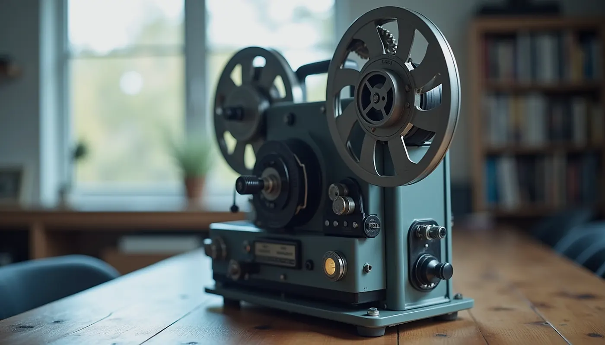

Факултет по индустриални технологии · ТУ–София
Катедра „Теория на механизмите и машините“
Самостоятелна катедра от 1974 г., с корени от 1945 г. Обучаваме студентите в механичната същност на машините и развиваме инженерна култура и изобретателско мислене.

Как можем да помогнем?
За студенти
Какво се изучава, къде се прилага и отговори на най-честите въпроси.
Към раздела →За наука
Синтез на механизми, роботика, динамика и предавки.
Към раздела →За бизнеса
Договори, консултации, патенти и внедряване на разработки.
Към раздела →За любознателни
Седем интерактивни схеми и три упражнения — опитайте сами.
Към раздела →Накратко
Къде се прилага
Зад всяка движеща се машина има механизъм, който някой е трябвало да разбере и проектира. Изберете пример и го опитайте в интерактивните материали.

ВелосипедЗъбни колела: веригата и зъбните колела сменят скоростта и силата. БагерЛостови механизми: рамото е верига от звена на шарнири.
БагерЛостови механизми: рамото е верига от звена на шарнири. ДвигателКолянно-плъзгачен механизъм: буталата въртят коляновия вал.
ДвигателКолянно-плъзгачен механизъм: буталата въртят коляновия вал.
КлапаниГърбици: профилът решава кога се отваря клапанът.
КинопроекторМалтийски механизъм: плавното въртене става кадър по кадър.Опитайте механизъм
Четиризвенният механизъм е „азбуката“ на дисциплината. Променяйте размерите на звената и наблюдавайте траекторията на точка от свързващия лост.
Ръководство
проф. дтн инж. Николай Николов
Блок 4, ет. 5, каб. 4536
02 965 2770 · nickn@tu-sofia.bg

Историческа справка
Корените на дисциплината са от 1945 г. През юни 1974 г. катедрата става самостоятелна. Основател е проф. Михаил Константинов (1921–1991). Към историята →
Често задавани въпроси
Какво е „Теория на механизмите и машините“?
Наука за движението на механизмите и машините: как се свързват звената, за да превърнат едно движение в друго, и как инженерите проектират такива системи.
Какво ще изучавам?
Катедрата води 10 задължителни дисциплини, две от които в магистърски програми, и предлага две избираеми. Тематичните области са структура и кинематика, сили и динамика, проектиране и синтез, приложение и магистърска специализация. Конкретните дисциплини са посочени в учебните планове.
Къде се прилага това знание?
Навсякъде, където нещо се движи по зададен закон: роботика, машиностроене, автоматизация, мехатроника, проектиране на двигатели, предавки и производствени линии.